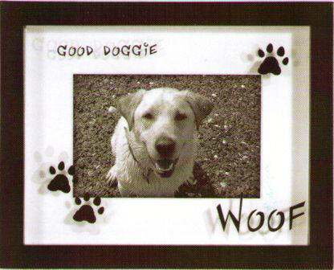

Dette er en side om mit kæledyr, som desværre ikke findes i virkeligheden. Men man kan godt forestille sig, at det er en ret sød hund, som fx kunne se sådan her ud som herunder.
Generelt om hunde:
Hvis du har brug for en ramme til hundefotos, som du sørgligt nok finder på nettet, kan de findes her:
Billedrammer hos bganordic